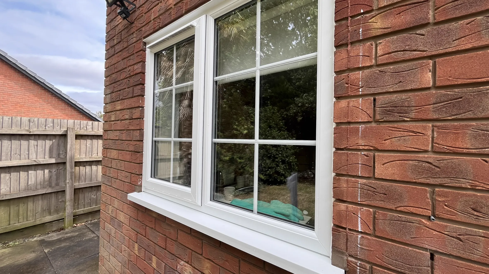

Window Cleaning in Bromsgrove
At All Saints Jet Washing, we provide professional exterior window cleaning across Bromsgrove and nearby areas.
We use the pure water cleaning method, which leaves glass spotless and streak-free without the need for detergents or chemicals.

Our water-fed pole system allows us to clean windows, frames and sills safely from the ground, even on upper floors.
This method gives excellent results and keeps your windows cleaner for longer.
We offer regular window cleaning rounds every 4, 5 or 6 weeks, as well as one-off cleans to suit your needs. We already have an established window cleaning round in Bromsgrove, so you can be sure of a reliable and regular service.
Whether you're looking for a regular service or a one-time clean, All Saints Jet Washing keeps your windows looking their best all year round.
Contact Us